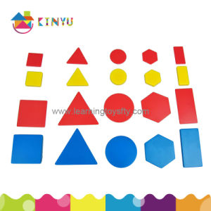

Propiedad que tiene un sistema de aprender y modificar un proceso, un
estado o una característica de acuerdo a las modificaciones que sufre el contexto. Un
sistema adaptable posee un fluido de intercambio con el medio en el que se desarrolla.
Sucesos y condiciones que influyen sobre el comportamiento de un sistema.
Propiedad que mide el nivel de compatibilidad con su medio o contexto. Un
sistema altamente armónico es aquel que sufre modificaciones en su estructura, proceso
o características en la medida que el medio se lo exige y es estático cuando el medio
también lo es.

Caracterización de las partes o componentes de un sistema para determinarlas
estructurales o funcionales. Los atributos definen tal como se conoce u observa un
sistema. Los atributos pueden ser definidores o concomitantes: los atributos definidores
son aquellos sin los cuales una entidad no sería designada o definida tal como se le hace;
los atributos concomitantes en cambio son aquellos cuya presencia o ausencia no
establece ninguna diferencia con respecto al uso del término que describe la unidad.